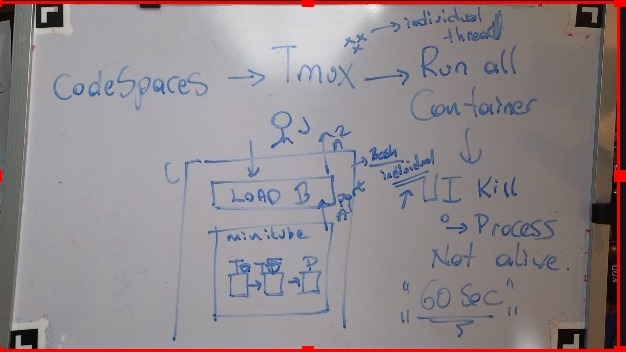

Tmux and Multi Port Forward OpenUp

🚀 Streamlining Minikube Clusters in Codespaces with Tmux and Multi-Port Forwarding
Managing Kubernetes clusters on Minikube within GitHub Codespaces can be a challenge—especially when it comes to exposing multiple ports for development and debugging. However, combining Tmux and multi-port forwarding can supercharge your workflow. Here’s how you can set it up and what to watch out for.
🛠️ Why Tmux?
Tmux is a terminal multiplexer that allows you to:
-
Run multiple terminal sessions within one window.
-
Easily switch between tasks without losing your place.
-
Keep sessions active even if your SSH session disconnects.
This makes it perfect for managing Minikube clusters where you might need multiple commands running simultaneously.
🌉 What is Multi-Port Forwarding?
Multi-port forwarding allows you to expose several services running on your Minikube cluster to your local environment or Codespaces setup. For example:
-
Port 3000 for your frontend app.
-
Port 8080 for your backend service.
-
Port 9000 for tools like MinIO or Grafana.
📝 Setup Guide: Tmux and Multi-Port Forwarding for Minikube
🔧 Step 1: Install Tmux
In your Codespace terminal, install Tmux if it’s not already available:
sudo apt update && sudo apt install tmux
🌀 Step 2: Start Tmux
Launch a Tmux session:
tmux new -s minikube-session
You can now split panes and run commands simultaneously:
-
Use
Ctrl+b "to split panes horizontally. -
Use
Ctrl+b %to split panes vertically. -
Navigate using
Ctrl+b arrow keys.
🚀 Step 3: Expose Minikube Ports
First, ensure Minikube is running:
minikube start
Then, forward your cluster’s ports using kubectl:
kubectl port-forward service/frontend-service 3000:3000 &
kubectl port-forward service/backend-service 8080:8080 &
kubectl port-forward pod/grafana-pod 9000:3000 &
💡 Pro Tip: Use separate Tmux panes for each port-forward command to monitor logs and troubleshoot issues.
📸 Screenshot Pause
Take a screenshot of your Tmux layout with active port-forward commands. It should look like this:
[Minikube Session]
| kubectl logs frontend |
|---|
| kubectl logs backend |
🖥️ Step 4: Access Services
Use the forwarded ports in your browser or API testing tools like Postman. For Codespaces, ensure the ports are exposed by adding them in the Forwarded Ports section of your environment.
🚨 What to Watch Out For
-
Session Management:
If you close the terminal, Tmux keeps the session alive, but you must reattach:tmux attach -t minikube-session -
Port Collisions:
Ensure the ports you forward don’t conflict with existing services on your Codespace. -
Firewall Rules:
Codespaces enforces network rules. If ports don’t work, check your Codespace's settings. -
Resources:
Running multiple Tmux panes and forwarding ports can be resource-intensive. Monitor CPU and memory usage in Minikube.
🌟 Why This Workflow Rocks
-
Improved Productivity: Seamlessly manage multiple tasks in Tmux.
-
Quick Debugging: Port-forwarding makes services accessible in real-time.
-
Resilient Sessions: No need to restart everything after a disconnect.
🔗 Connect with Me:
Let’s discuss workflows, share tips, and solve challenges together!
🌐 Whether you’re managing microservices or exploring Kubernetes, this setup will keep your development environment smooth and efficient. 💪
Imported from rifaterdemsahin.com · 2025